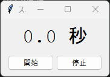
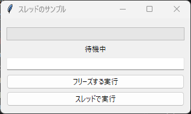

10. 時間のかかる処理
10.1 GUI がフリーズする理由
第 2 章で説明したとおり、コールバック関数はイベントループの中で呼び出されます。コールバック関数の実行中、イベントループは画面の再描画やクリックなどのイベントを処理できません。そのため、コールバック関数の中で数秒かかる処理を実行すると、その間は画面が固まって操作を受け付けなくなります。Windows では、タイトルバーに「応答なし」と表示されることもあります。
この問題には、次の 2 つの方法で対処します。
処理を短い単位に分け、
afterメソッドで少しずつ実行します。処理を別のスレッドで実行します。
10.2 after による定期処理
after(ミリ秒, 関数, *引数) は、指定した時間が経過した後に関数を 1 回呼び出すように予約します。予約した関数はイベントループの中で呼び出されるため、待っている間も画面は操作できます。
after は予約の ID を返します。この ID を after_cancel に渡すと、予約を取り消せます。
関数の中で自分自身を再び after で予約すると、処理を一定間隔で繰り返せます。次のサンプルコードは、この方法で 0.1 秒ごとに表示を更新するストップウォッチです。
1"""第 10 章: after による定期処理のサンプルです。
2
30.1 秒ごとに表示を更新するストップウォッチを作ります。
4"""
5
6import time
7import tkinter as tk
8from tkinter import ttk
9
10INTERVAL_MS = 100 # 表示を更新する間隔 (ミリ秒)
11
12
13def main() -> None:
14 """ストップウォッチを表示します。"""
15 root = tk.Tk()
16 root.title("ストップウォッチ")
17
18 display = tk.StringVar(value="0.0 秒")
19 ttk.Label(
20 root, textvariable=display, font=("Courier", 24), padding=10
21 ).pack()
22
23 start_time = 0.0 # 計測を開始した時刻
24 after_id: str | None = None # 予約中の処理の ID (停止中は None)
25
26 def tick() -> None:
27 """経過時間を表示し、INTERVAL_MS ミリ秒後に自分自身を再び予約します。"""
28 nonlocal after_id
29 elapsed = time.perf_counter() - start_time
30 display.set(f"{elapsed:.1f} 秒")
31 after_id = root.after(INTERVAL_MS, tick)
32
33 def start() -> None:
34 """計測を開始します。すでに動いている場合は何もしません。"""
35 nonlocal start_time
36 if after_id is None:
37 start_time = time.perf_counter()
38 tick()
39
40 def stop() -> None:
41 """予約中の処理を取り消して計測を止めます。"""
42 nonlocal after_id
43 if after_id is not None:
44 root.after_cancel(after_id)
45 after_id = None
46
47 buttons = ttk.Frame(root, padding=(10, 0, 10, 10))
48 buttons.pack()
49 ttk.Button(buttons, text="開始", command=start).pack(side="left", padx=2)
50 ttk.Button(buttons, text="停止", command=stop).pack(side="left", padx=2)
51
52 root.mainloop()
53
54
55if __name__ == "__main__":
56 main()

実行結果
after で指定した時間は、関数を呼び出すまでの最短の時間です。ほかの処理が実行中であれば、呼び出しは遅れます。そのため、このサンプルコードでは呼び出しの回数を数えるのではなく、time.perf_counter で計測した実際の経過時間を表示しています。
10.3 threading との併用
ファイルのダウンロードのように、短い単位に分けにくい処理は、threading モジュールで別のスレッドを作成して実行します。このとき、次の規則を守る必要があります。
警告
ウィジェットや変数クラスの操作は、メインスレッド（tk.Tk() を作成したスレッド）だけで行ってください。別のスレッドからウィジェットを操作すると、エラーが発生したり、アプリケーションが不安定になったりすることがあります。
別のスレッドの処理結果を画面に反映するには、次の手順を使います。
別のスレッドは、結果や進捗を
queue.Queueに入れます。メインスレッドは、
afterで定期的にキューを確認し、届いた値を画面に反映します。
次のサンプルコードでは、「フリーズする実行」ボタンと「スレッドで実行」ボタンで、同じ処理（合計 5 秒の待機）を実行します。前者では処理中に入力欄へ入力できず、画面の表示も更新されませんが、後者では処理中も操作でき、進捗も表示されます。
1"""第 10 章: 時間のかかる処理をスレッドで実行するサンプルです。
2
3「フリーズする実行」ボタンでは、処理中に画面が反応しなくなります。
4「スレッドで実行」ボタンでは、処理中も画面を操作でき、進捗も表示されます。
5"""
6
7import queue
8import threading
9import time
10import tkinter as tk
11from tkinter import ttk
12
13STEPS = 50 # 重い処理の段階数
14POLL_INTERVAL_MS = 100 # キューを確認する間隔 (ミリ秒)
15
16
17def heavy_task(report: queue.Queue[int] | None = None) -> None:
18 """時間のかかる処理の代わりに、少しずつ待機します (合計 5 秒)。
19
20 report が指定された場合は、1 段階終わるごとに完了した段階数を入れます。
21 この関数の中ではウィジェットを操作しません。
22 """
23 for step in range(1, STEPS + 1):
24 time.sleep(0.1)
25 if report is not None:
26 report.put(step)
27
28
29def main() -> None:
30 """2 種類の実行方法を比べるウィンドウを表示します。"""
31 root = tk.Tk()
32 root.title("スレッドのサンプル")
33
34 frame = ttk.Frame(root, padding=10)
35 frame.pack(fill="both", expand=True)
36
37 progress = tk.IntVar(value=0)
38 status = tk.StringVar(value="待機中")
39 ttk.Progressbar(frame, length=300, maximum=STEPS, variable=progress).pack(
40 pady=5
41 )
42 ttk.Label(frame, textvariable=status).pack()
43
44 # 処理中も画面が動いていることを確かめるための入力欄です
45 ttk.Entry(frame).pack(fill="x", pady=5)
46
47 progress_queue: queue.Queue[int] = queue.Queue()
48
49 def set_buttons_enabled(enabled: bool) -> None:
50 """2 つの実行ボタンを、まとめて操作可能または操作不可にします。"""
51 for button in (blocking_button, thread_button):
52 button.state(["!disabled"] if enabled else ["disabled"])
53
54 def run_blocking() -> None:
55 """メインスレッドで重い処理を実行します。終わるまで画面は反応しません。"""
56 status.set("実行中 (フリーズします)")
57 root.update_idletasks() # 上の表示を反映させてから処理を始めます
58 heavy_task()
59 status.set("完了")
60
61 def run_in_thread() -> None:
62 """別スレッドで重い処理を実行し、進捗の確認を開始します。"""
63 set_buttons_enabled(False) # 処理の重複実行を防ぎます
64 status.set("実行中 (操作できます)")
65 progress.set(0)
66 worker = threading.Thread(
67 target=heavy_task, args=(progress_queue,), daemon=True
68 )
69 worker.start()
70 check_queue(worker)
71
72 def check_queue(worker: threading.Thread) -> None:
73 """キューに届いた進捗を画面に反映します。メインスレッドで実行されます。"""
74 # 先に生存を確認します。キューを空にした後に確認すると、その間に
75 # 届いた最後の進捗を取りこぼすことがあるためです。
76 alive = worker.is_alive()
77 while True:
78 try:
79 progress.set(progress_queue.get_nowait())
80 except queue.Empty:
81 break
82 if alive:
83 root.after(POLL_INTERVAL_MS, check_queue, worker)
84 else:
85 status.set("完了")
86 set_buttons_enabled(True)
87
88 blocking_button = ttk.Button(
89 frame, text="フリーズする実行", command=run_blocking
90 )
91 blocking_button.pack(fill="x", pady=2)
92 thread_button = ttk.Button(
93 frame, text="スレッドで実行", command=run_in_thread
94 )
95 thread_button.pack(fill="x", pady=2)
96
97 root.mainloop()
98
99
100if __name__ == "__main__":
101 main()

実行結果
サンプルコードのポイントは次のとおりです。
heavy_task関数はウィジェットを操作せず、進捗をキューに入れるだけです。check_queue関数はafterから呼び出されるため、メインスレッドで実行されます。キューに届いた値をすべて取り出して Progressbar に反映し、スレッドが動いている間は自分自身を再び予約します。スレッドの生存確認をキューの取り出しより先に行うのは、最後の進捗を取りこぼさないためです。スレッドを
daemon=Trueで作成しているため、処理の途中でウィンドウを閉じても、スレッドの終了を待たずにアプリケーションが終了します。処理中は 2 つの実行ボタンを
state(["disabled"])で操作不可にし、同じ処理が重複して実行されないようにしています。run_blocking関数のupdate_idletasksは、保留中の再描画を実行するメソッドです。これを呼び出さないと、処理が終わるまで「実行中」という表示が画面に反映されません。
注釈
Python の標準的な実装（CPython）の通常のビルドでは、GIL（グローバルインタープリターロック）により、Python のコードを同時に実行できるスレッドは 1 つだけです。サンプルコードの time.sleep や、ファイルやネットワークの入出力を待つ処理はスレッドで効果を発揮します。一方、CPU で計算を続ける処理をスレッドで実行すると、画面の反応が遅くなることがあります。その場合は、concurrent.futures.ProcessPoolExecutor などを使って、別のプロセスで計算を実行することを検討してください。